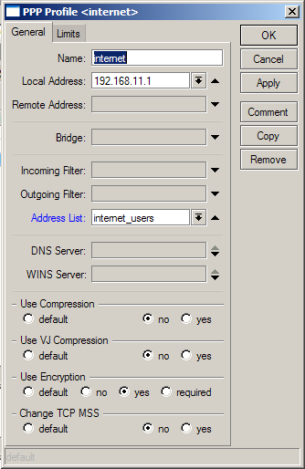

|
Назначение и особенности |
Top Previous Next |
|
Раздел используется для настройки параметров работы системы с серверами доступа.
Система Expert Billing System обладает встроенной поддержкой серверов доступа на базе Mikrotik RouterOS и возможностью использования других серверов доступа, поддерживающих требуемый RADIUS функционал и управление через SSH. Конфигурации команд для RouterOS версий 2.8.х, 2.9.х и 3.х. включены в состав системы и не требуют дополнительных настроек для использования.
Чтобы обеспечить взаимодействие Expert Billing System с другими типами серверов доступа, необходимо самостоятельно указать действия, которые необходимо произвести на сервере доступа при возникновении тех или иных событий: создания и удаления, активации и деактивации пользователя, сброса сессии пользователя, а также для установки скорости VPN/IPN-клиентов.
Обратите внимание: для HotSpot сессий изменение скорости и сброс сессий происходит посредством технологий RADIUS CoA и POD.
Команда создания пользователя выполняется при создании нового аккаунта (для ТП с возможностью «IPN-действий»), либо же при ручном добавлении аккаунта на сервер доступа («Добавить на сервер доступа»). Аналогичным образом используются команды удаления пользователя, его активации/деактивации. Команда сброса сессии посылается на сервер доступа в случае принудительного ограничения доступа через «Монитор сессий», а также для работающих через PPTP/PPPOE/HotSpot пользователей при израсходовании средств на лицевом счете, превышении лимитов времени и/или трафика, выходе за рамки разрешённого временного диапазона.
При успешной аутентификации абонента RADIUS-сервер посылает на сервер доступа следующие атрибуты:
Service-Type Framed-User Framed-Protocol PPP Framed-IP-Address VPN IP адрес абонента
При описании команд «Сбросить сессию пользователя», «Установить скорость для VPN клиента», «Установить скорость для IPN клиента» допускается использование следующих параметров:
$access_type [pptp/pppoe/ipn] – способ доступа $username – имя пользователя $user_id – уникальный идентификатор пользователя $account_ipn_ip – IP-адрес учетной записи (пользователи, подключающиеся по IPN) $account_vpn_ip – IP-адрес учетной записи (пользователи, подключающиеся по VPN) $account_mac_address – MAC-адрес пользователя с данной учетной записью $session – идентификатор сессии
При описании команд «Создать пользователя», «Удалить пользователя», «Активировать пользователя», «Деактивировать пользователя» допускается использование следующих параметров:
$access_type [pptp/pppoe/ipn/hotspot] – способ доступа $password – пароль пользователя $username – имя пользователя $user_id – уникальный идентификатор пользователя $account_ipn_ip – IP-адрес учетной записи (пользователи, подключающиеся по IPN) $account_vpn_ip – IP-адрес учетной записи (пользователи, подключающиеся по VPN) $account_mac_address – MAC-адрес пользователя с данной учетной записью
Обратите внимание: управление сервером доступа происходит только в том случае, если абонент подключен на IPN-тариф или в VPN-тарифе выбрана опция «Производить IPN-действия».
Обратите внимание: по умолчанию система оперирует списком доступа под названием internet_users. Вы должны самостоятельно указать необходимые действия со списком доступа, которые разрешат всем его активным IP-адресам доступ к услугам и запретят всем остальным.
Если вы не планируете использовать VPN-тарифы, это можно реализовать следующим образом:
/ip firewall filter add chain=forward src-address-list=internet_users action=accept /ip firewall nat add src-address-list=internet_users action=masquerade Если совместно с IPN- будут использоваться также VPN-тарифы в профиле PPTP/PPPOE абонента нужно указать этот же address list
 Настройка PPP address list PPPOE профиля
В данной конфигурации система правил маршрутизатора даст доступ в интернет только авторизованным абонентам.
Обратите внимание: задержка между проверками на необходимость включения/отключения /добавления/удаления абонентов на сервере доступа происходит раз в несколько минут, поэтому отсылка команд на сервер доступа происходит не мгновенно.
Обратите внимание: при ручном конфигурировании шаблонов обратите внимание на то, что на сервере доступа уже могут существовать записи, которые вы собираетесь добавлять, поэтому перед добавлением новой записи в отдельных случаях есть смысл попробовать произвести удаление старой. This help file was created with an unregistered evaluation copy of Help & Manual. © EC Software. All rights reserved. This message will not appear if you compile this help file with the registered version of Help & Manual. |